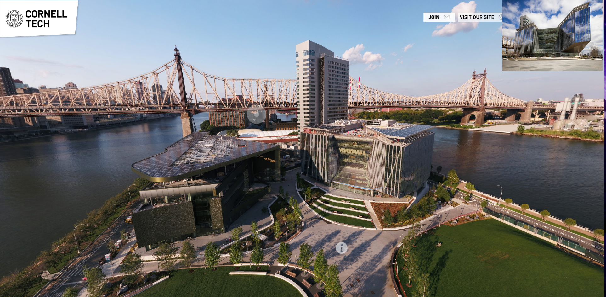

On Monday May 11th, Cornell University and IBM Research are co-hosting the
4th NorthEast Computational Health Summit (NECHS) focused on the latest developments Personal and Population Health in the Digital Era.The goal of the summit is to foster communication and collaboration among
clinicians, medical informaticists, and computational researchers in the northeast.
The summit will feature two invited keynotes:
- Harlan Krumholz, Director,Yale New Haven Hospital Center for Outcomes Research and Evaluation (CORE) and Harold H. Hines, Jr. Professor of Medicine at Yale University
- Gregory Cooper, Professor of Biomedical Informatics,University of Pittsburgh
There will also be an invited panel presentation led by Amar Das of IBM Research and Fei Wang of Cornell University as well as submitted papers and posters on various aspects of digital health including deep learning, observational studies, predictive modelling, translational informatics, patient engagement and health behavior.
There will be ample time for less formal interactions during lunch, as well as during the poster session and breaks.
We invite submissions of abstracts describing all aspects of
research relating to design and implementation of AI in Healthcare Delivery.
This encompasses relevant tasks in data mining,
data analytics, data science, natural language processing and
machine learning as well as explanatory models. The primary emphasis
is on advances in the science and application of AI in healthcare.
Submitted abstracts will go through a peer review process and will
be selected for either podium or poster presentations by the
review committee. Some poster presentations will also be
selected for a short oral spotlight presentation prior to
the poster session.
Submissions
Submissions will be via Easy Chair and are limited to a total of 1 page,
including all content and references.
Key Dates
Attendance
For each accepted paper or poster,
at least one author must attend the conference and present the
paper/poster. There will be no official publication of papers,
however, podium presentations may be video-taped and, if so, presenters
will be asked to sign a release form to allow the videos to be made
available on the conference web site.
While we are seeking to showcase new
work, our summit does allow
submission of papers that are under review or have been recently
published in a conference or a journal.